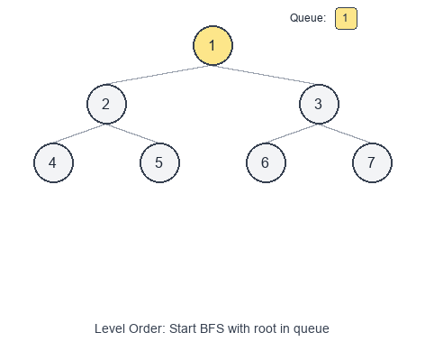

Introduction to Level Order Traversal Pattern
Level order traversal visits a tree level by level (top to bottom), typically using Breadth-First Search (BFS) with a queue.
Visual Example
Level-by-Level BFS

It’s a go-to pattern whenever the problem statement hints at:
- “level by level”, “each level”, “row by row”
- “minimum number of steps/edges” (on unweighted graphs/trees)
- “nearest”, “closest”, “shortest path” (in an unweighted sense)
When to use
- You need to process nodes in increasing distance from the root.
- The output is grouped by levels (e.g., list of lists).
- You need per-level aggregates (sum, average, max).
- You need to find the first node that satisfies a condition in BFS order.
Common variants
- Plain BFS (single queue): visit nodes in BFS order.
- Level-by-level BFS: capture the queue size to separate levels.
- Zigzag traversal: reverse direction on alternating levels.
- Reverse level order: collect levels then reverse at the end.
- Multi-source BFS: start with multiple nodes in the queue (common on grids/graphs).
Pattern recipe (level-by-level)
- Initialize a queue with the root.
- While the queue is not empty:
- Let
level_size = len(queue). - Process exactly
level_sizenodes (this is one level). - Add their children to the queue.
- Record results for the level.
- Let
Complexity
- Time: $O(n)$ — each node is enqueued/dequeued once.
- Space: $O(w)$ — where $w$ is the maximum width of the tree (queue size at the widest level).
Short examples
Binary tree level order traversal — Python
from collections import deque
class TreeNode:
def __init__(self, val=0, left=None, right=None):
self.val = val
self.left = left
self.right = right
def level_order(root):
if not root:
return []
q = deque([root])
res = []
while q:
level_size = len(q)
level = []
for _ in range(level_size):
node = q.popleft()
level.append(node.val)
if node.left:
q.append(node.left)
if node.right:
q.append(node.right)
res.append(level)
return res
Level aggregates (sum per level) — Python
from collections import deque
def level_sums(root):
if not root:
return []
q = deque([root])
sums = []
while q:
level_size = len(q)
s = 0
for _ in range(level_size):
node = q.popleft()
s += node.val
if node.left:
q.append(node.left)
if node.right:
q.append(node.right)
sums.append(s)
return sums
Common pitfalls
- Forgetting to snapshot
level_sizebefore the loop (levels get mixed). - Using recursion for level order without careful depth tracking (works, but less direct).
- For zigzag: don’t reverse the whole result every time; reverse just the current level.
Problems to practice